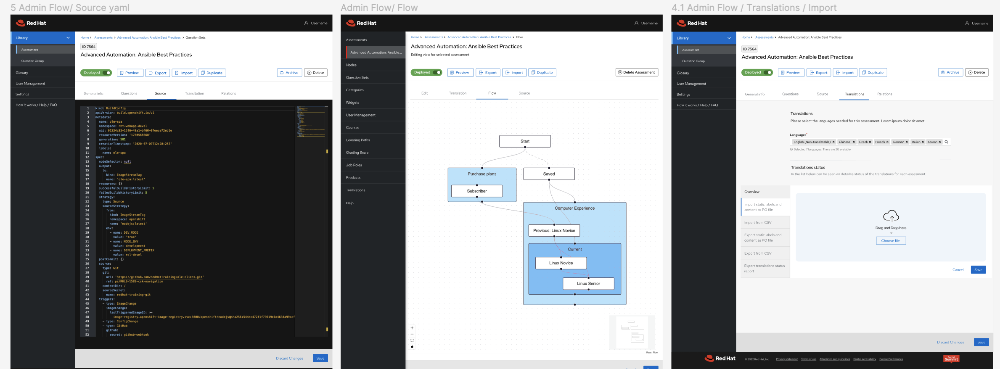
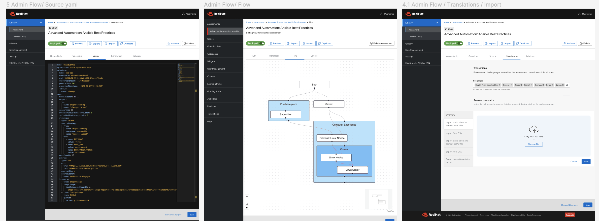

Project Overview
Skills Assessment 2.0 [SA 2.0] serves as a key sales tool, allowing Red Hat clients to evaluate their team's technical proficiency in enterprise products. It identifies skill gaps, providing an opportunity to upsell customized training courses and certification packages, ensuring technical adoption.
The implementation of SA 2.0 involved close collaboration among four significant internal teams: Sales, Marketing, Curriculum and RHLS team (Red Hat Learning Subscriptions) which provides the technical capacities for developing and maintaining the learning platforms, of which I was a member. I collaborated extensively with all the stakeholders to gather business requirements and understand the user needs and pain points. I also worked closely with the engineer team to understand the high technical constraints and create a design that was both functional and visually appealing.
The SA 2.0 app was officially launched in June 2023.
Within the first month, Red Hat learning
subscription sales
increased over 15%. Since then, SA 2.0 has achieved more than 5,000 monthly visits.
Legacy version


 
